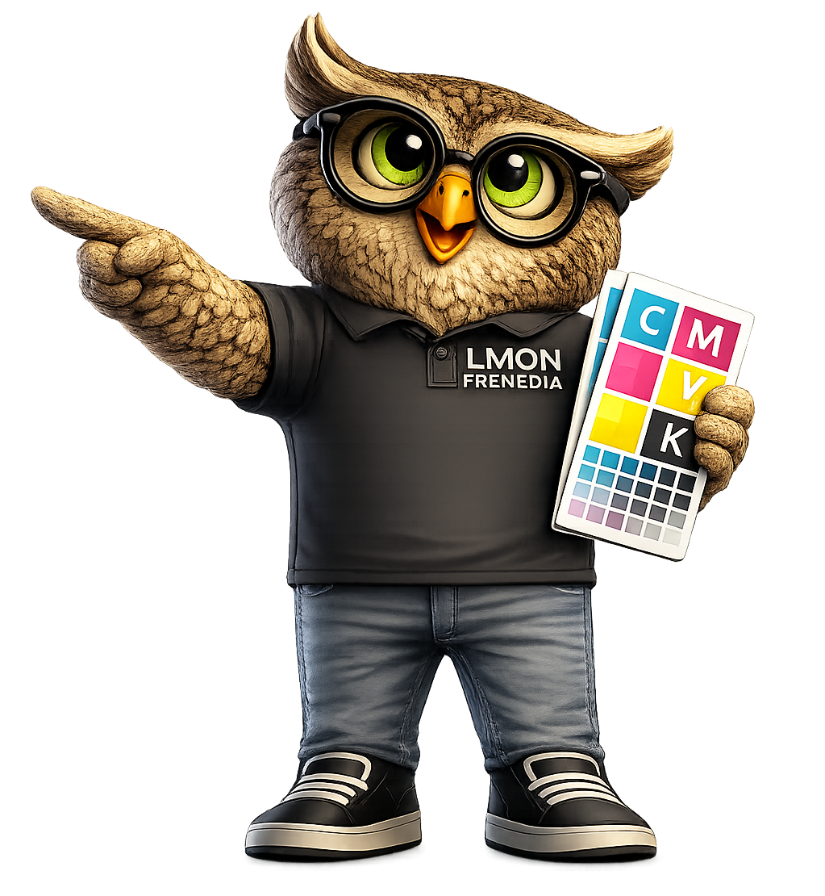

Simulator Area

🦉 OTTO TIP
Drag the CMY ink layers together. Cyan + Yellow creates Green, Cyan + Magenta creates Blue, Magenta + Yellow creates Red. Combining all three ideally produces Black.
💡 DID YOU KNOW?
- CMY mixing absorbs light instead of adding it.
- Printing presses use CMYK rather than RGB.
- Pure black is usually produced using a separate K plate.
- Paper and ink affect the final printed colour.